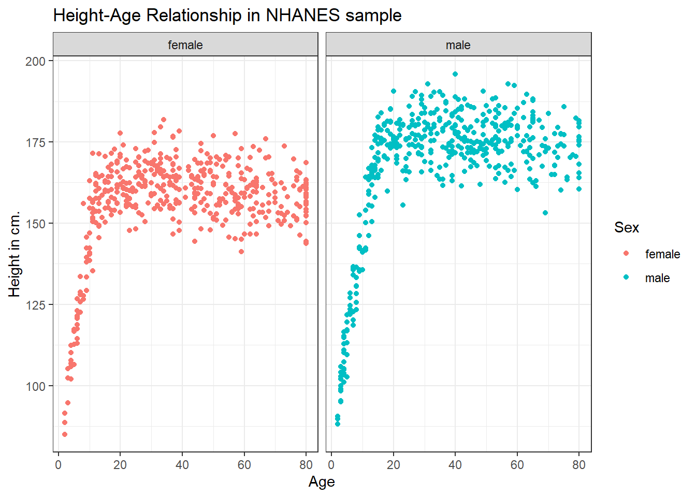

Chapter 3 NHANES: Initial Exploring
Next, we’ll explore some data from the US National Health and Nutrition Examination Survey, or NHANES.
We’ll display R code as we go, but we’ll return to all of the key coding ideas involved later in the Notes.
3.1 The NHANES data: A First Sample
The NHANES package provides a sample of 10,000 NHANES responses from the 2009-10 and 2011-12 administrations, in a data frame also called NHANES. We can obtain the dimensions of this data frame (think of it as a rectangle of data) with the dim() function.
dim(NHANES)[1] 10000 76We see that we have 10000 rows and 76 columns in the NHANES data frame.
For the moment, let’s gather a random sample of 1,000 responses from the 10000 rows listed in the NHANES data frame, and then identify several variables of interest about those subjects1. Some of the motivation for this example came from a Figure in Baumer, Kaplan, and Horton (2017).
# library(NHANES) # already loaded NHANES package/library of functions, data
set.seed(431001)
# use set.seed to ensure that we all get the same random sample
# of 1,000 NHANES subjects in our nh_data collection
nh_dat1 <-
slice_sample(NHANES, n = 1000, replace = FALSE) %>%
select(ID, SurveyYr, Gender, Age, Height)
nh_dat1# A tibble: 1,000 x 5
ID SurveyYr Gender Age Height
<int> <fct> <fct> <int> <dbl>
1 69638 2011_12 female 5 106.
2 70782 2011_12 male 64 176.
3 52408 2009_10 female 54 162.
4 59031 2009_10 female 15 155.
5 64530 2011_12 male 53 185.
6 71040 2011_12 male 63 169.
7 55186 2009_10 female 30 168.
8 60211 2009_10 male 5 103.
9 55730 2009_10 male 66 161.
10 68229 2011_12 female 36 170.
# ... with 990 more rowsWe have 1000 rows (observations) and 5 columns (variables) that describe the responses listed in the rows.
3.2 Age and Height
Suppose we want to visualize the relationship of Height and Age in our 1,000 NHANES observations. The best choice is likely to be a scatterplot.
ggplot(data = nh_dat1, aes(x = Age, y = Height)) +
geom_point()Warning: Removed 37 rows containing missing values (geom_point).
We note several interesting results here.
- As a warning, R tells us that it has “Removed 37 rows containing missing values (geom_point).” Only 963 subjects plotted here, because the remaining 37 people have missing (NA) values for either Height, Age or both.
- Unsurprisingly, the measured Heights of subjects grow from Age 0 to Age 20 or so, and we see that a typical Height increases rapidly across these Ages. The middle of the distribution at later Ages is pretty consistent at at a Height somewhere between 150 and 175. The units aren’t specified, but we expect they must be centimeters. The Ages are clearly reported in Years.
- No Age is reported over 80, and it appears that there is a large cluster of Ages at 80. This may be due to a requirement that Ages 80 and above be reported at 80 so as to help mask the identity of those individuals.2
As in this case, we’re going to build most of our visualizations using tools from the ggplot2 package, which is part of the tidyverse series of packages. You’ll see similar coding structures throughout this Chapter, most of which are covered as well in Chapter 3 of Grolemund and Wickham (2021).
3.3 Subset of Subjects with Known Age and Height
Before we move on, let’s manipulate the data set a bit, to focus on only those subjects who have complete data on both Age and Height. This will help us avoid that warning message.
nh_dat2 <- nh_dat1 %>%
filter(complete.cases(Age, Height))
summary(nh_dat2) ID SurveyYr Gender Age Height
Min. :51624 2009_10:487 female:484 Min. : 2.00 Min. : 85.0
1st Qu.:57034 2011_12:476 male :479 1st Qu.:19.00 1st Qu.:156.2
Median :62056 Median :37.00 Median :165.0
Mean :61967 Mean :38.29 Mean :162.3
3rd Qu.:67269 3rd Qu.:56.00 3rd Qu.:174.5
Max. :71875 Max. :80.00 Max. :195.9 Note that the units and explanations for these variables are contained in the NHANES help file, available via typing ?NHANES in the Console of R Studio, or by typing NHANES into the Search bar in R Studio’s Help window.
3.3.1 The Distinction between Gender and Sex
The Gender variable here is mis-named. These data refer to the biological status of these subjects, which is their Sex, and not the social construct of Gender which can be quite different. In our effort to avoid further confusion, we’ll rename the variable Gender to Sex so as to more accurately describe what is actually measured here.
To do this, we can use this approach…
nh_dat2 <- nh_dat1 %>%
rename(Sex = Gender) %>%
filter(complete.cases(Age, Height))
summary(nh_dat2) ID SurveyYr Sex Age Height
Min. :51624 2009_10:487 female:484 Min. : 2.00 Min. : 85.0
1st Qu.:57034 2011_12:476 male :479 1st Qu.:19.00 1st Qu.:156.2
Median :62056 Median :37.00 Median :165.0
Mean :61967 Mean :38.29 Mean :162.3
3rd Qu.:67269 3rd Qu.:56.00 3rd Qu.:174.5
Max. :71875 Max. :80.00 Max. :195.9 That’s better. How many observations do we have now? We could use dim to find out the number of rows and columns in this new data set.
dim(nh_dat2)[1] 963 5Or, we could simply list the data set and read off the result.
nh_dat2# A tibble: 963 x 5
ID SurveyYr Sex Age Height
<int> <fct> <fct> <int> <dbl>
1 69638 2011_12 female 5 106.
2 70782 2011_12 male 64 176.
3 52408 2009_10 female 54 162.
4 59031 2009_10 female 15 155.
5 64530 2011_12 male 53 185.
6 71040 2011_12 male 63 169.
7 55186 2009_10 female 30 168.
8 60211 2009_10 male 5 103.
9 55730 2009_10 male 66 161.
10 68229 2011_12 female 36 170.
# ... with 953 more rows3.4 Age-Height and Sex?
Let’s add Sex to the plot using color, and also adjust the y axis label to incorporate the units of measurement.
ggplot(data = nh_dat2, aes(x = Age, y = Height, color = Sex)) +
geom_point() +
labs(title = "Height-Age Relationship in NHANES sample",
y = "Height in cm.")
3.4.1 Can we show the Female and Male relationships in separate panels?
Sure.
ggplot(data = nh_dat2, aes(x = Age, y = Height, color = Sex)) +
geom_point() +
labs(title = "Height-Age Relationship in NHANES sample",
y = "Height in cm.") +
facet_wrap(~ Sex)
3.4.2 Can we add a smooth curve to show the relationship in each plot?
Yep, and let’s change the theme of the graph to remove the gray background, too.
ggplot(data = nh_dat2, aes(x = Age, y = Height, color = Sex)) +
geom_point() +
geom_smooth(method = "loess", formula = y ~ x) +
labs(title = "Height-Age Relationship in NHANES sample",
y = "Height in cm.") +
theme_bw() +
facet_wrap(~ Sex)
3.4.3 What if we want to assume straight line relationships?
We could look at a linear model in the plot. Does this make sense here?
ggplot(data = nh_dat2, aes(x = Age, y = Height, color = Sex)) +
geom_point() +
geom_smooth(method = "lm", formula = y ~ x) +
labs(title = "Height-Age Relationship in NHANES sample",
y = "Height in cm.") +
theme_bw() +
facet_wrap(~ Sex)
I hope it seems clear from the graphs that a more complex relationship is going on here than just a straight line.
In the next Section of these Notes, we’ll take a more carefully selected sample of NHANES respondents, and study those subjects in greater detail.